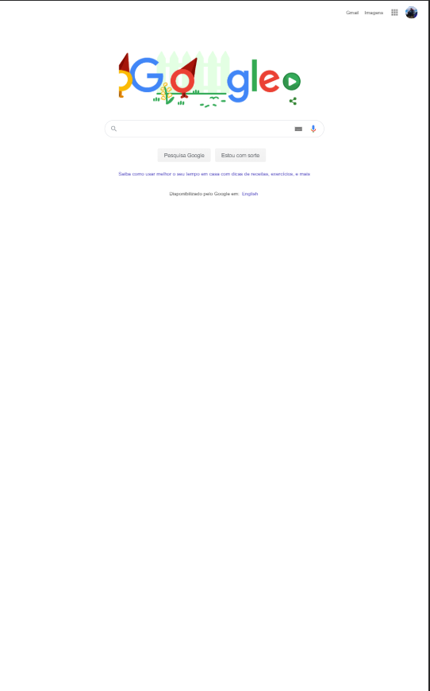
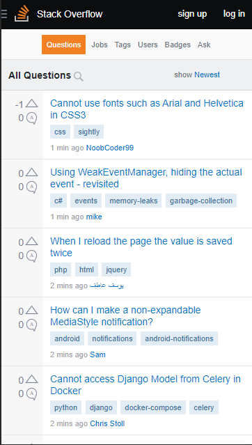

White Space and Clean Design
In Google website we can see how they decided to use whote space to have a clean layout and mantein the focus on the search bar. Link: Google.com
Repetition
In this website we can se how they use repetition to have an equal layout adapting the size of box to each product text. Link: Mercado Livre
Proximity / Alignment
In stack overflow we can see the alignment used to separate every question but still with the proximity to separate the objects to each question individual. Link: Stack Overflow
